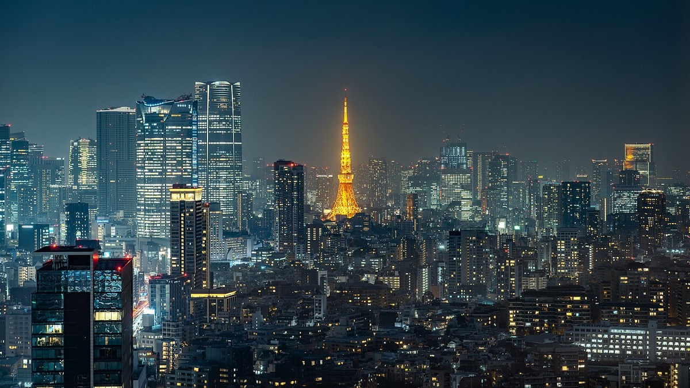
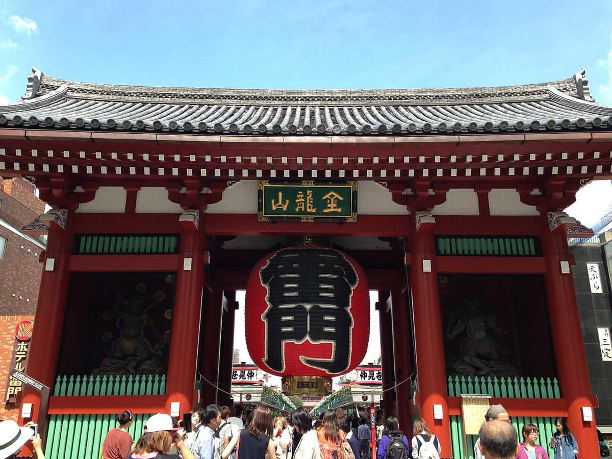
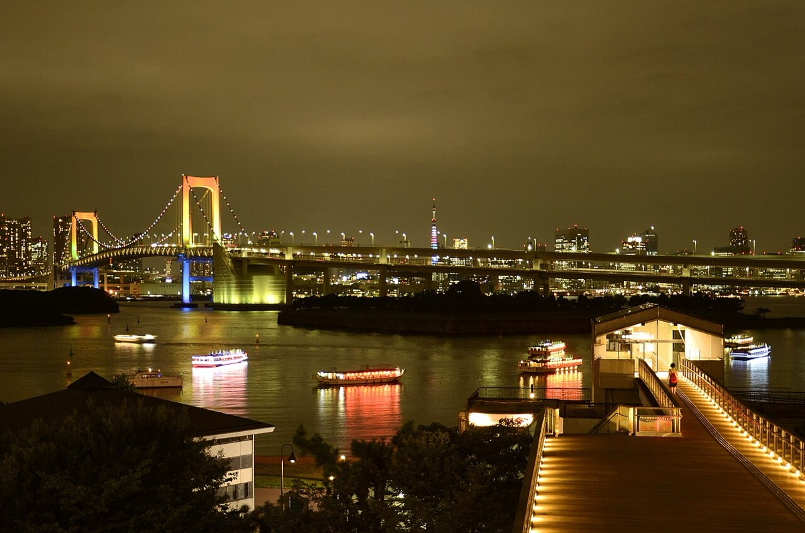

여행 전체 동선 · 도쿄역 근처에 묵으며 날마다 다른 방향으로 나갔다 돌아온다
Day 1 · 붉은 벽돌 앞에서
5월 1일 (수)
오후 비행기로 나리타에 내려 익스프레스로 도쿄역까지. 야끼니꾸를 먹고 마루노우치를 걷는다.
Day 1의 하루 곡선 · 낮에 떠나 마루노우치의 밤까지
FLIGHT
인천 → 나리타14:00 출발 · 16:30 도착
STAY
Belken Hotel Tokyo도쿄역 · 2박
오늘의 미션
마루노우치 나카도리도쿄역 앞 가로수길
공항 → 도쿄역
타임라인
| 시간 | 일정 | 메모 |
|---|
| 오전 | 광교 → 인천공항 공항버스 | |
| 12:00 | 출국 수속 1시간 30분 | |
| 14:00 | 인천 → 나리타 ✈ 2시간 30분 | 16:30 도착. |
| 16:30 | 입국 수속 1시간 | 여권 판독기가 붙은 자동발매기에서 발권할 수 있다. QR코드와 여권을 들고 간다. |
| 17:30 | 나리타 익스프레스로 도쿄역 1시간 | 왕복 10,000엔. |
| 19:00 | 숙소 체크인 | 도쿄역 21·22번 출구. 16번 출구로 나오면 육교를 건너야 한다. |
| 20:15 | 이즈미노 예약 완료 ✓ | 야끼니꾸. 구글 예약 필수. |
| 21:30 | 마루노우치 나카도리 산책 오늘의 미션 | 포켓몬센터 DX와 킷테 옥상정원도 이 근처. 둘 다 21시까지. |
DAY 1 체크포인트
- 나리타에서 도쿄역까지 익스프레스로 한 시간입니다. 왕복권을 미리 끊어두면 공항에서 줄을 서지 않습니다.
- 도쿄역은 출구를 잘못 나오면 한참 돌아갑니다. 마루노우치 쪽 숙소라면 21·22번 출구입니다.
- 첫날 저녁은 숙소 반경으로만 잡았습니다. 입국 수속에 한 시간이 걸리면 그 뒤가 전부 밀립니다.
Day 2 · 스튜디오에서 네 시간
5월 2일 (목)
장어덮밥으로 점심을 먹고 도시마엔까지. 해리포터 스튜디오에서 오후를 다 쓰고 이케부쿠로에서 몬자야키.
Day 2의 하루 곡선 · 도심에서 북서쪽 끝까지
MOVE
긴자선 + 오에도선도시마엔까지 1시간 30분
도쿄역 → 도시마엔
타임라인
| 시간 | 일정 | 메모 |
|---|
| 11:00 | 스미야키 우나후지 도쿄미드타운 예약 완료 ✓ | 히츠마부시. 11시 말고는 자리가 없다. |
| 12:00 | 해리포터 스튜디오로 1시간 30분 | 니혼바시 → 아오야마잇초메(긴자선) → 도시마엔(오에도선). |
| 13:30 | 워너브라더스 스튜디오 투어 도쿄 오늘의 미션 | 약 4시간. 로비 굿즈샵과 레스토랑은 입장 1시간 전부터 이용할 수 있다. |
| 17:30 | 이케부쿠로역으로 30분 | 세이부 후쿠토신선. 패스 사용 불가. |
| 18:30 | 도쿄 몬자야키 쿠라야 예약 완료 ✓ | 17:00~23:00. |
| 20:00 | 도쿄역으로 30분 | 마루노우치선. |
| 20:30 | 마루노우치 나카도리 산책 야경 | |
DAY 2 체크포인트
- 해리포터 스튜디오는 반나절짜리입니다. 네 시간을 잡아야 하고, 굿즈샵은 입장 한 시간 전부터 들어갈 수 있으니 일찍 가도 손해가 없습니다.
- 교복을 미리 사서 가면 사진이 다릅니다. 현장 구매보다 싸고 줄도 없습니다.
- 도시마엔은 도심에서 멀어 왕복 세 시간입니다. 이날 다른 일정을 욕심내지 않는 편이 낫습니다.
Day 3 · 센소지와 그릇 거리
5월 3일 (금)
숙소를 옮기고 아사쿠사로. 센소지를 돌고 갓파바시에서 그릇을 사서 아키하바라로 넘어간다.
Day 3의 하루 곡선 · 옛 동네에서 전자상가까지
오늘의 미션
센소지628년 창건, 도쿄에서 가장 오래된 절
숙소 → 아사쿠사 → 아키하바라
타임라인
| 시간 | 일정 | 메모 |
|---|
| 09:15 | 체크아웃 | |
| 09:30 | APA Hotel로 짐 옮기기 13분 | 니혼바시 → 히가시니혼바시(아사쿠사선). |
| 10:00 | 센소지 오늘의 미션 | 가미나리몬 → 호조몬 → 본당 → 아사쿠사 신사. 나카미세도리에서 메론빵과 야끼소바. |
| 11:30 | 타스케 스시 식사 | 11:30~14:00, 17:00~20:30. |
| 13:00 | 갓파바시 도구거리 쇼핑 | 식당 도구 도매 거리. 칼과 주걱, 수저받침. |
| 14:00 | 아키하바라로 20분 | 이리야 → 아키하바라(히비야선). |
| 오후 | 고양이 카페와 거리 구경 여유 | 포켓몬센터, 가챠. |
| 저녁 | 큐슈 장가라 라멘 아키하바라점 식사 | 돈코츠 라멘. 웨이팅 기본 30분. |
DAY 3 체크포인트
- 센소지는 아침이 낫습니다. 나카미세도리는 낮이 될수록 밀집도가 올라갑니다.
- 갓파바시는 식당용 도매 거리입니다. 칼과 그릇이 싸고 종류가 많지만, 가게마다 일요일과 공휴일에 쉬는 곳이 있습니다.
- 숙소를 옮기는 날이라 체크아웃하고 새 숙소에 짐만 맡기는 동선으로 잡았습니다.
Day 4 · 책방과 도쿄타워
5월 4일 (토)
다이칸야마에서 느리게 걷는 날. 츠타야 서점과 에비스를 지나 해 질 무렵 시바공원으로.
Day 4의 하루 곡선 · 천천히 걷다 도쿄타워 앞에서 끝난다
MOVE
신주쿠선 + 후쿠토신선다이칸야마까지 50분
오늘의 미션
다이칸야마 츠타야책과 잡화로 세 시간
VIEW
시바공원도쿄타워가 가장 잘 보이는 자리
숙소 → 다이칸야마 → 시바공원
타임라인
| 시간 | 일정 | 메모 |
|---|
| 10:30 | 다이칸야마로 50분 | 바쿠로요코하마 → 신주쿠산초메(신주쿠선) → 다이칸야마(후쿠토신선). |
| 11:30 | Grigio 식사 | 치킨카레와 스테키동. 11:30~22:30, 좌석이 많지 않다. |
| 12:30 | 다이칸야마 츠타야 서점 오늘의 미션 | 거리 전체가 느린 동네다. 나카메구로 산책도 붙일 수 있다. |
| 오후 | 카페 휴식 티타임 | Daikanyama Concept Shop. |
| 16:00 | 에비스 가든플레이스로 도보 21분 | |
| 16:30 | 에비스 가든플레이스 명소 | 세련된 복합 쇼핑몰. 밤 일루미네이션이 좋다. |
| 17:30 | 시바공원으로 30분 | 에비스 → 가미야초(히비야선). |
| 18:00 | 시바공원 야경 | 도쿄타워 뷰 맛집. 사진 줄이 한 시간까지 선다. 돗자리를 깔고 쉬기도 좋다. |
DAY 4 체크포인트
- 다이칸야마는 서두르면 의미가 없는 동네입니다. 츠타야 서점과 골목 가게들을 천천히 보는 데 세 시간을 썼습니다.
- 다이칸야마에서 에비스는 걸어서 20분입니다. 지하철로 돌아가는 것보다 걷는 쪽이 빠르고 볼 것도 많습니다.
- 시바공원 포토 스폿은 줄이 깁니다. 도쿄타워가 통째로 들어오는 자리는 한 시간까지 기다리기도 합니다.
Day 5 · 정원과 교차로
5월 5일 (일)
규카츠로 시작해 신주쿠 교엔에서 쉬고, 오후에는 시부야와 하라주쿠를 걷는다.
Day 5의 하루 곡선 · 조용한 정원에서 사람 많은 교차로로
MOVE
신주쿠선 + 후쿠토신선숙소에서 신주쿠까지 20분
오늘의 미션
신주쿠 교엔에도 다이묘 저택이 황실 정원이 된 곳
EAT
로스트 비프 오노 하라주쿠점웨이팅 1시간
신주쿠 → 시부야 → 하라주쿠
타임라인
| 시간 | 일정 | 메모 |
|---|
| 10:30 | 니시신주쿠로 20분 | 바쿠로요코야마 → 신주쿠(신주쿠선). |
| 11:00 | 모토무라 규카츠 니시신주쿠점 식사 | 11시 오픈 시간에 맞춰 간다. |
| 13:00 | 신주쿠 교엔 오늘의 미션 | 규카츠집에서 도보 15분. |
| 15:00 | 카페 알리야 티타임 | 프렌치 토스트. 현금 결제만 된다. |
| 16:30 | 시부야로 20분 | 신주쿠산초메 → 시부야(후쿠토신선). |
| 17:00 | 하치코 동상과 스크램블 교차로 명소 | 교차로는 스타벅스 시부야 츠타야점 2층에서 내려다본다. |
| 18:00 | 키디랜드 쇼핑 | 11:00~20:00. |
| 18:45 | 로스트 비프 오노 하라주쿠점 식사 | 웨이팅 1시간. 21:00 라스트 오더. |
DAY 5 체크포인트
- 신주쿠 교엔은 도심에서 가장 조용한 두 시간입니다. 오전에 사람 많은 곳을 돌았다면 여기서 쉬어 가는 배치가 좋습니다.
- 카페 알리야는 현금만 받습니다. 엔화 현금을 조금 남겨두세요.
- 스크램블 교차로는 스타벅스 2층에서 보는 게 가장 잘 보입니다. 자리 경쟁이 있습니다.
Day 6 · 물속을 걷는 전시
5월 6일 (월)
마지막 숙소로 옮기고 긴자에서 쇼핑. 오후 3시 예약한 팀랩 플래닛에서 두 시간.
Day 6의 하루 곡선 · 백화점에서 어두운 전시장으로
STAY
Super Hotel Premier Tokyo도쿄역 · 3박
오늘의 미션
팀랩 플래닛15:00 예약 · 약 2시간
숙소 → 긴자 → 도요스
타임라인
| 시간 | 일정 | 메모 |
|---|
| 10:00 | Super Hotel Premier Tokyo로 25분 | 히가시니혼바시 → 다카라초(아사쿠사선). 짐만 맡긴다. |
| 10:30 | 이세히로 교바시본점 식사 | 야키토리동. 11:30 오픈인데 11:00~11:15부터 대기해야 한다. |
| 12:00 | 마루노우치 나카도리 선택 | 포켓몬센터 DX, 킷테 6층 옥상정원(무료). 둘 다 21시까지. |
| 12:50 | 긴자 미츠코시 백화점 쇼핑 | 지갑. |
| 14:10 | 팀랩 플래닛으로 30분 | 유라쿠초 → 도요스(유라쿠초선) → 신토요스(유리카모메). |
| 15:00 | 팀랩 플래닛 오늘의 미션 | 15:00 예약. 약 2시간. 맨발로 물속을 걷는 구간이 있다. |
| 저녁 | 도쿄역으로 복귀 40분 | 츠루동탄 명란크림우동. |
DAY 6 체크포인트
- 팀랩 플래닛은 맨발로 들어갑니다. 무릎까지 물에 잠기는 구간이 있어 바지를 걷어 올리기 쉬운 옷이 편합니다.
- 이세히로는 11:30 오픈인데 11시부터 줄을 섭니다. 점심에서 시간을 아껴야 오후 예약 시각을 맞출 수 있습니다.
- 숙소를 마지막으로 옮기는 날이라 오전에 짐을 옮겨두고 움직였습니다.
Day 7 · 바다 건너 인공섬
5월 7일 (화)
유리카모메를 타고 오다이바로. 건담과 자유의 여신상을 보고 저녁은 스프카레.
Day 7의 하루 곡선 · 레인보우 브릿지를 건너는 하루
도쿄역 → 오다이바
타임라인
| 시간 | 일정 | 메모 |
|---|
| 점심 | 오코노미야끼 키지 식사 | 도쿄역 근처. |
| 오후 | 오다이바로 유리카모메 | 신바시에서 무인 전철. 레인보우 브릿지 위를 지난다. |
| 오후 | 다이바시티 도쿄 플라자 오늘의 미션 | 실물 크기 건담 입상. |
| 오후 | 레인보우 브릿지와 자유의 여신상 명소 | 해변 산책로에서 도심 쪽으로 본다. |
| 저녁 | 아쿠아시티 쇼핑 | 도라에몽 인형, 토토로 가챠. |
| 저녁 | 삿포로 도미닉 식사 | 스프카레. |
DAY 7 체크포인트
- 오다이바는 해 질 무렵이 가장 좋습니다. 레인보우 브릿지에 불이 들어오고 도심 스카이라인이 건너편으로 보입니다.
- 유리카모메 맨 앞칸을 노리세요. 무인 운행이라 운전석이 없어서 앞유리로 다리 위를 그대로 봅니다.
- 섬 안에서는 걷는 거리가 깁니다. 다이바시티에서 아쿠아시티까지도 한참이니 신발을 편하게 신으세요.
Day 8 · 에끼벤 하나
5월 8일 (수)
체크아웃하고 도쿄역에서 도시락을 산다. 나리타로 나가 면세점에서 마지막 선물.
Day 8의 하루 곡선 · 짧게 정리하고 돌아간다
FLIGHT
나리타 → 인천나리타 익스프레스로 이동
숙소 → 공항
타임라인
| 시간 | 일정 | 메모 |
|---|
| 오전 | 체크아웃 | |
| 점심 | 도쿄역 에끼벤 식사 | 역 안 도시락 매장. |
| 오후 | 나리타공항으로 1시간 | 나리타 익스프레스. |
| 오후 | 면세점 쇼핑 | 선물과 포켓몬 인형. |
DAY 8 체크포인트
- 도쿄역 에끼벤은 그 자체로 하나의 코너입니다. 종류가 수십 가지라 고르는 데만 시간이 걸립니다.
- 나리타까지 한 시간입니다. 익스프레스 왕복권을 처음에 끊어두면 돌아가는 날 줄을 서지 않습니다.
- 마지막 날은 공항 반경으로만 잡는 편이 안전합니다.
전체 컨셉
7박 8일 동안 도쿄 밖으로 나가지 않았다. 숙소는 도쿄역과 바쿠로요코야마 두 곳뿐이고, 날마다 한 방향씩 정해 나갔다 돌아오는 방사형 동선이다.
이 일정의 뼈대
- 도쿄역을 거점으로나리타 익스프레스가 서고 야마노테선이 지나며 긴자와 마루노우치가 걸어갈 거리다. 첫날과 마지막 사흘을 여기에 묶으면 공항 이동이 단순해진다.
- 하루에 한 방향해리포터는 북서쪽, 아사쿠사는 북동쪽, 다이칸야마는 남서쪽, 오다이바는 남동쪽이다. 한 방향씩 끊어야 지하철 환승에 하루를 쓰지 않는다.
- 큰 덩어리는 하루에 하나해리포터 스튜디오 네 시간, 팀랩 플래닛 두 시간은 각각 그날의 중심이다. 둘을 같은 날에 넣으면 둘 다 쫓긴다.
- 예약이 필요한 곳부터 날짜를 박았다해리포터, 팀랩, 인기 식당은 모두 사전 예약제다. 이 날짜들을 먼저 고정하고 나머지를 주변에 붙였다.
도쿄 東京
에도 위에 올린 도시

사진 · David Kernan · CC BY 4.0
붉은 벽돌의 도쿄역 마루노우치 역사와 도쿄타워, 마루노우치의 가로수, 그리고 노란 전철
도쿄의 지명은 대부분 에도 시대의 기능에서 왔다. 긴자는 1612년 은화를 주조하던 관청이 옮겨 온 자리이고, 마루노우치는 에도성 해자 안쪽, 그러니까 성곽 안이라는 뜻이다. 지금 오피스 거리가 된 곳이 원래 다이묘 저택 터다.
알고 가면 보이는 것
- 도쿄역 붉은 벽돌 역사1914년에 세워졌고 공습으로 지붕이 날아간 뒤 오랫동안 임시 형태로 있다가, 2012년에 창건 당시 돔 지붕으로 복원됐다. 마루노우치 쪽 정면이 그 복원된 얼굴이다.
- 긴자는 은화를 찍던 곳1612년 은 주조소를 이곳으로 옮기며 생긴 이름이다. 화폐를 다루던 거리가 상업 중심지가 된 건 자연스러운 수순이었다.
- 신주쿠 교엔은 다이묘 저택이었다에도 시대 나이토 가문의 저택 터가 메이지에 황실 정원이 됐고, 전후에 일반에 공개됐다. 일본식·영국식·프랑스식 정원이 한 울타리 안에 있는 건 황실 정원 시절의 흔적이다.
- 몬자야키는 간토의 음식밀가루 반죽을 오코노미야키보다 훨씬 묽게 풀어 철판 위에서 긁어 먹는다. 전후 쓰키시마 일대에서 아이들 군것질로 팔던 것이 뿌리라, 오사카의 오코노미야키와는 계보가 다르다.
현장 메모
- 도쿄역 출구를 확인할 것마루노우치 쪽 숙소면 21·22번 출구다. 16번으로 나오면 육교를 건너야 한다.
- 인기 식당은 오픈 30분 전이세히로는 11:30 오픈인데 11시부터 줄이 선다. 구글 예약이 되는 곳은 미리 잡는 게 낫다.
- 익스프레스는 왕복으로나리타 왕복권을 처음에 끊어두면 돌아가는 날 줄을 서지 않는다.
아사쿠사 浅草
도쿄에서 가장 오래된 절

사진 · そらみみ (Soramimi) · CC BY-SA 4.0
628년에 시작된 센소지의 가미나리몬 대제등과 오중탑, 인력거, 그리고 아사쿠사의 메론빵
센소지는 628년에 시작됐다. 스미다강에서 그물을 던지던 어부 형제가 관음상을 건져 올렸고, 그들의 주인이 집을 절로 바꿔 모신 것이 기원이다. 도쿄에서 가장 오래된 절이고, 그 앞에 생긴 마을이 아사쿠사다.
알고 가면 보이는 것
- 가미나리몬의 대제등문에 걸린 거대한 붉은 등은 천둥과 바람의 신을 좌우에 둔 문이라 가미나리몬(뇌문)이라 부른다. 등 아래쪽을 올려다보면 용이 조각돼 있다.
- 나카미세도리는 참배길 장사가미나리몬에서 본당까지 이어지는 상점가는 에도 시대 청소 당번을 맡은 주민들에게 장사를 허락한 데서 시작했다. 지금 파는 메론빵과 닌교야키도 그 계보다.
- 갓파바시는 식당용 도매 거리조리도구와 식기를 도매로 파는 800m 남짓한 거리다. 이름의 유래는 갓파 전설과, 비옷을 뜻하는 캇파를 말리던 데서 왔다는 설이 갈린다. 음식 모형 가게가 몰려 있는 곳도 여기다.
- 오중탑은 다시 세운 것센소지 경내는 1945년 공습으로 거의 다 탔다. 본당은 1958년, 오중탑은 1973년에 재건됐다. 창건은 7세기지만 건물은 전후의 것이다.
현장 메모
- 아침이 낫다나카미세도리는 낮이 될수록 걷기 어려워진다.
- 갓파바시 휴무 확인가게마다 일요일과 공휴일에 쉬는 곳이 있다.
- 현금을 조금작은 가게와 노점은 카드가 안 되는 곳이 많다.
오다이바 お台場
포대 자리에 세운 섬

사진 · Stephen Kelly · CC BY 2.0
에도 방어용 포대 자리에 선 오다이바와 레인보우 브릿지, 건담, 자유의 여신상, 그리고 유리카모메
오다이바의 다이바는 포대라는 뜻이다. 1853년 페리 함대가 내항해 개국을 압박하자, 막부가 에도만을 지키려고 바다에 서양식 해상 포대를 쌓았다. 그 인공섬이 지금의 오다이바다.
알고 가면 보이는 것
- 포대는 한 번도 쓰이지 않았다열한 기를 계획했지만 실제로는 다섯 기만 완성됐고, 전투에 쓰인 적 없이 방치됐다. 지금 원형에 가깝게 남은 건 제3·제6 다이바 둘뿐이고, 제3 다이바는 공원으로 걸어 들어갈 수 있다.
- 앞에 붙은 오는 존칭막부에 경의를 표하는 뜻으로 다이바 앞에 お를 붙여 불렀다. 지명에 존칭이 굳어 남은 경우다.
- 유리카모메는 무인 운행운전석이 없어 맨 앞칸에서 레인보우 브릿지 위를 그대로 내다볼 수 있다. 신바시에서 섬까지 바다 위를 크게 한 바퀴 돌아 들어간다.
- 자유의 여신상은 복제1998년 일본 내 프랑스의 해 행사로 파리에서 빌려 온 상을 전시했다가, 반응이 좋아 이듬해 복제품을 세운 것이다. 뒤로 레인보우 브릿지가 겹쳐 보이는 각도가 사진 자리다.
현장 메모
- 해 질 무렵에다리에 불이 들어오고 건너편 도심이 함께 보인다.
- 유리카모메 맨 앞칸무인 운행이라 앞유리가 통째로 전망석이다.
- 섬 안이 넓다다이바시티에서 아쿠아시티까지도 꽤 걷는다.